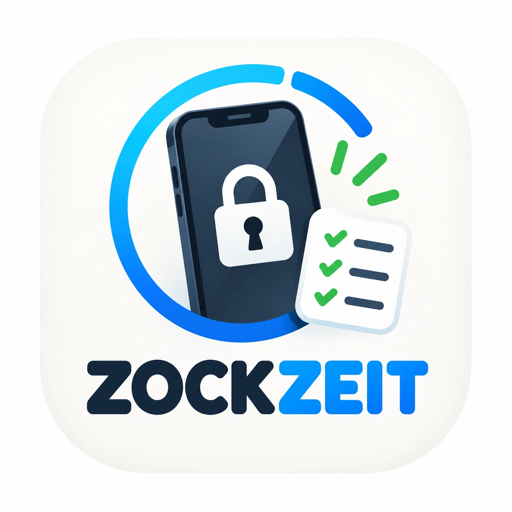

ZockZeit
Erst lernen, dann zocken
App laden
Für iPhone. Eltern und Kind nutzen dieselbe App.
So funktioniert ZockZeit
- Spiele gesperrt: Du wählst auf deinem iPhone, welche Apps gesperrt sind – z. B. alle Spiele, YouTube oder TikTok.
- Zeit verdienen: Dein Kind löst Aufgaben passend zur Klasse und verdient Minuten. Die Zeit läuft nur, während wirklich gespielt wird.
- Aufgaben: Mathe, Deutsch und Englisch nach Klassenstufe, eigene Themen (z. B. Vokabeln für den Test) – auch aus einem Foto vom Lernzettel.
- Freiwillig üben: Wer mehr übt, bekommt mehr Zeit – bis zu einer Grenze, die du festlegst. Raten lohnt sich nicht.
- Ohne Code: Es gibt keinen Code, den dein Kind herausfinden kann. Änderungen machst du auf deinem iPhone.
- Datenschutz: kein Konto, keine Werbung – alles liegt in eurer eigenen iCloud.
Preis
14 Tage kostenlos testen. Danach für die ganze Familie (alle Kinder, beide Eltern):
pro Monat
pro Jahr – spare 44 %
Das Kind-iPhone braucht kein eigenes Abo. Kündigen jederzeit in den Einstellungen deines iPhones unter [dein Name] → Abonnements.
Häufige Fragen
Was brauche ich, damit die Sperre funktioniert?
Dein Kind braucht eine eigene Apple-ID und muss in deiner Apple-Familienfreigabe als Kind eingetragen sein. Die Bildschirmzeit für dein Kind muss eingeschaltet sein, und beide iPhones sind bei iCloud angemeldet. Eine Anleitung Schritt für Schritt findest du in der App über das Fragezeichen.
Die Spiele bleiben gesperrt, obwohl Zeit verdient ist
Fast immer ist dann noch ein App-Limit in Apples Bildschirmzeit aktiv. Ausschalten auf deinem iPhone unter Einstellungen → Bildschirmzeit → [Kind] → App-Limits. Am Sperrbildschirm erkennst du es: „Zockzeit aufgebraucht“ kommt von ZockZeit, „Zeitlimit“ mit Sanduhr kommt von Apple.
Beim Genehmigen der Sperre kommt „Unbekannter Fehler“
Stell auf deinem iPhone unter Einstellungen → Bildschirmzeit → [Kind] → Inhalte & Datenschutz → Accountänderungen kurz auf „Erlauben“, genehmige die Sperre und stell es danach wieder auf „Nicht erlauben“.
Wie lade ich mein Kind oder den anderen Elternteil ein?
In ZockZeit auf deinem iPhone „Familie einladen“ tippen und die Einladung per Nachricht schicken. Auf dem anderen iPhone ZockZeit öffnen, „Ich bin das Kind“ bzw. „Ich bin Mama oder Papa“ wählen und dann den Link in der Nachricht antippen.
Kann mein Kind die Sperre ausschalten?
Die Sperre läuft über Apples Bildschirmzeit-Technik für Familien. ZockZeit lässt sich auf dem Kind-iPhone nicht ohne deine Zustimmung löschen, und die gesperrten Apps änderst nur du auf deinem iPhone. Wichtig: Dein eigener Bildschirmzeit-Code und dein iPhone-Code sollten deinem Kind nicht bekannt sein.
Neues iPhone – wie bekomme ich mein Abo zurück?
In ZockZeit unter Einstellungen → Abo → Käufe wiederherstellen. Nutze dieselbe Apple-ID wie beim Kauf.
Was passiert, wenn das Abo endet?
ZockZeit macht auf dem Kind-iPhone Pause und gibt die Spiele frei. Sobald das Abo verlängert ist, geht es automatisch weiter.
Kontakt
Fragen, Fehler oder Wünsche? Schreib uns – am einfachsten direkt aus der App unter Einstellungen → Info → Support & Feedback. Dann sind Version und Kunden-ID schon in der Mail.
E-Mail schreiben